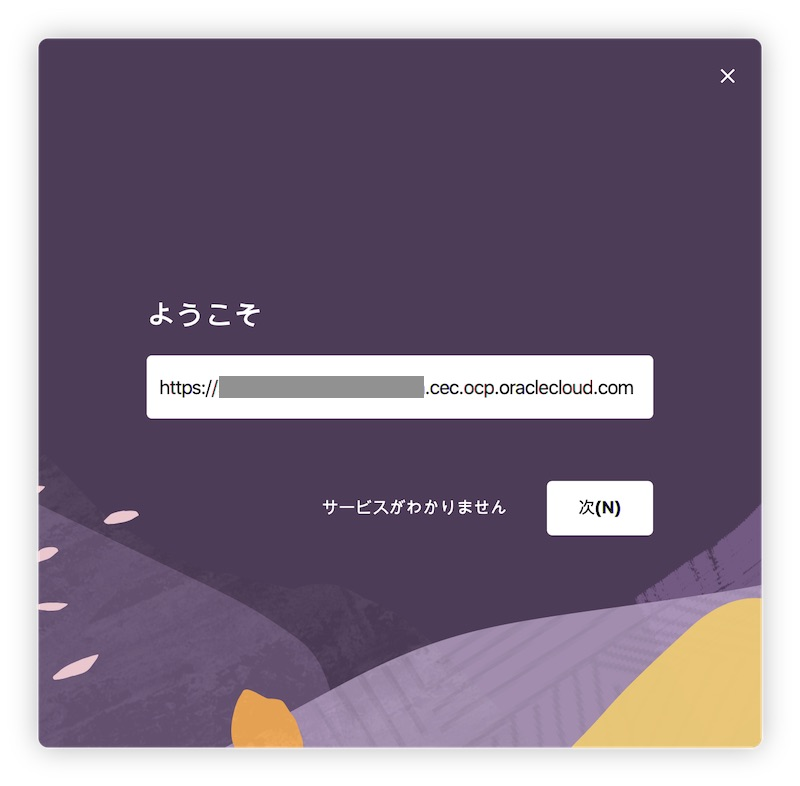
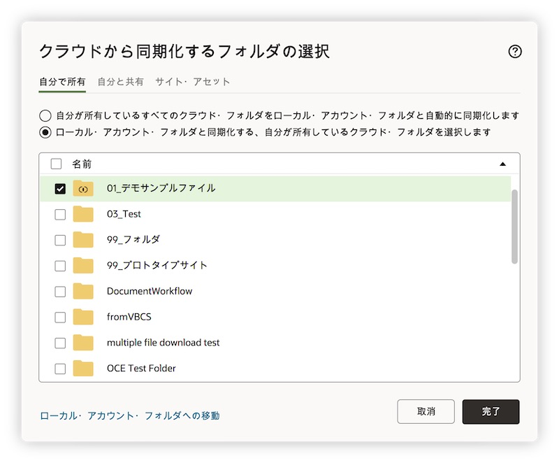
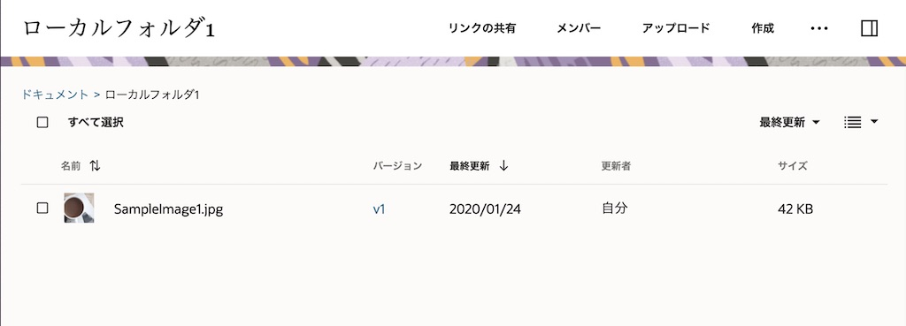
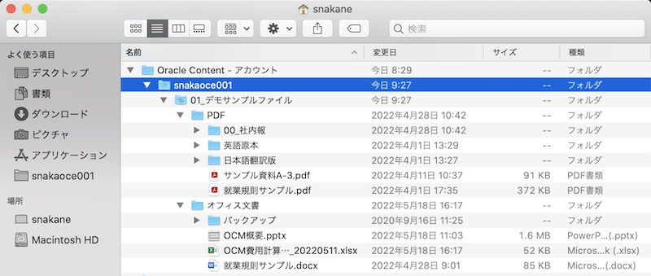
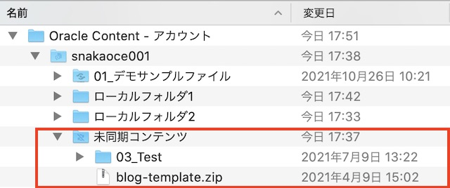

目次に戻る: Oracle Content Management のファイル共有機能を使ってみよう【初級編】
OCM のデスクトップ・アプリケーションは、クラウド上のファイルやフォルダとローカル環境のファイルやフォルダを同期します。クラウド上で更新されたファイルやフォルダは、自動的にローカル環境に同期されるため、ユーザーは常に最新のファイルやフォルダをローカル環境で利用することができます
また、ユーザーはネットワークに接続していないオフライン状態で、同期されたファイルやフォルダを操作できます。オフライン状態でローカル環境に同期されたファイルを編集・保存した場合、オンライン状態に復旧した時に自動的にクラウド上に反映されます。そのため、ユーザーが意識することなく、常に最新の状態がクラウド上で維持されます。
2022年5月のリリース(22.5.1)より、同期対象フォルダとして クラウド上のサブフォルダを選択できる ようになりました。従来はクラウド上の最上位階層のフォルダ（=クラウドフォルダ）のみを同期対象として選択できましたら、これからは（最上位階層の）クラウドフォルダだけでなく、その配下のサブフォルダ単位で同期を選択できます。サブフォルダを同期する場合、その選択方法により同期処理が異なります。詳細はSync Subfolders and Filesをご確認ください
デスクトップ・アプリケーションの利用には、ローカル環境へのインストールとOCMインスタンスの接続先情報の設定が必要です。デスクトップ・アプリケーションが対応するクライアント環境は、下記ドキュメントよりご確認ください
【お知らせ】
この文書は、2022年5月時点での最新バージョン(22.5.1)を元に作成されてます。
チュートリアル内の画面ショットについては、現在のユーザーインタフェースと異なっている場合があります。
前提条件
- Oracle Content Management インスタンスを作成する
- OCM の利用ユーザーに OCM インスタンスの CECStandardUser もしくは CECEnterpriseUser アプリケーション・ロールが付与されていること
1. デスクトップ・アプリケーションのインストールとセットアップ
1.1 インストーラーのダウンロード
OCM インスタンスから、デスクトップ・アプリケーションのインストーラーをダウンロードします。
-
Web ブラウザを開き、OCM インスタンスにアクセスします
-
右上のユーザーアイコン→ 「アプリケーションのダウンロード」 をクリックします

-
「ユーザー名」 と 「サービスURL」 をテキストファイルなどにメモします（インストール完了後のセットアップ作業で利用します）
-
ローカル環境のコンピュータと同じOSを選択し、「ダウンロード」 をクリックします（ここでは Windows を選択）

-
ダウンロードが完了するまで待ちます
1.2 インストーラーの実行とセットアップ
ダウンロードされたインストーラーを実行します。ここでは、Windows 環境へのインストール手順を紹介します
- ダウンロードされたインストーラーを起動します
-
インストーラーのガイダンスに従い、「次へ」 をクリックします

-
「インストール」 をクリックします

-
「Oracle Content for Windowsの起動」 を選択し、「完了」 をクリックします

-
-
セットアップ画面が表示されます。前の手順でメモした 「サービスURL」 を入力し、「次」 をクリックします

[TIPS]
バニティドメインを構成していないデフォルトのサービスURLの形式は以下の通りです。/documents はつけません
https://<OCM_Instance>-<Cloud_Account>.cec.ocp.oraclecloud.com -
「ユーザーID」 と 「パスワード」 を入力し、「サイン・イン」 をクリックします
-
「アカウントの設定」 画面が開きます
-
「同期化するフォルダを選択」 をクリックします

-
「自分が所有しているすべてのクラウド・フォルダをデバイスと自動的に同期化」 を 選択解除 し、ローカル環境に同期するフォルダを選択します（同期するフォルダを選択しないこともできます）

[TIPS]
デフォルトは 「自分が所有しているすべてのクラウド・フォルダをデバイスと自動的に同期化」 が選択されています。この設定の場合、クラウド上の自分が所有するすべてのフォルダがローカル環境に同期されます
2022年5月の22.5.1リリースより、同期対象に サブフォルダ を選択できるようになりました。詳細は2.2項をご確認ください -
必要に応じて 「格納場所の変更」 をクリックし、変更します
[TIPS]
格納場所のデフォルトは以下の通りです。また、格納場所として指定できるのはローカルドライブのみです
[Windows] C:¥Users¥USER_NAME¥Oracle Content-アカウント
[Mac] /Users/USER_NAME/Oracle Content-アカウント -
「完了」 をクリックし、変更します
-
-
アカウント設定画面に戻ります。最後に 「完了」 をクリックします
[TIPS]
デスクトップ・アプリケーションは、コンピュータの電源を入れると自動的に起動されるように構成されます。この構成はプリファレンスより変更できます
2. ファイル・フォルダの同期
2.1 ローカル→クラウドへの同期
ローカル環境の複数フォルダをOCMアカウントの同期フォルダ領域にコピーすると、自動的にクラウド上に反映されることを確認します
-
通知領域（もしくはタスクバー）の デスクトップアプリケーションアイコン
 をクリックします
をクリックします -
「デバイスで開く」アイコン をクリックします。複数アカウントが登録されている場合は、OCMアカウントも選択します

-
ローカル環境のフォルダを、アップロード先のフォルダにコピーします。ここでは、「ローカルフォルダ1」 と 「ローカルフォルダ2」 を、snakaoce001 アカウントの直下にコピーします

-
コピーしたフォルダおよびその配下の全てのフォルダ・ファイルが、自動的にクラウド上に同期されます。
Web ブラウザで OCM インスタンスのドキュメントを開きます。クラウド上に2つのフォルダが反映されていることを確認します
-
Web ブラウザで 「ローカルフォルダ1」 を開きます。中身はファイルが1件も登録されていません

-
ローカル環境で 「ローカルフォルダ1」 を開き、ファイルを1つ登録します。「進行中」 のアイコンが表示され、その後 「完了」 のアイコンに切り替わります

-
Web ブラウザに戻り、「ローカルフォルダ1」 をもう一度開きます（もしくはブラウザをリロードします）。ファイルが1件登録されていることを確認します

2.2 クラウド→ローカルへの同期
2.2.1 最上位階層のクラウドフォルダをローカルに同期する
クラウド上にあるフォルダを、ローカル環境に同期します。ここでは、自分が所有者である最上位階層のフォルダ をローカル環境に同期する手順について紹介します
-
通知領域（もしくはタスクバー）の 「デスクトップアイコン」 をクリックします
-
「同期化するフォルダを選択します」 をクリックします

-
（複数アカウントを登録している場合）アカウント を選択します
-
「自分で所有」 タブを選択します
-
ローカルに同期するフォルダを選択し、「完了」 をクリックします（ここでは「01_デモサンプルファイル」を選択）

-
指定したフォルダ（ここでは「01_デモサンプルファイル」）およびその配下のフォルダ・ファイルのすべてが、ローカル環境に同期されます

- 「同期化するフォルダ」のタブ説明
- 自分で所有: 自分が所有者のフォルダ（＝自分が作成したフォルダ、メンバー共有の有無は関係なし）
- 自分と共有: 他ユーザーから共有されたフォルダ
-
サイト・アセット: Web サイトで利用するテンプレート、テーマ、コンポーネントが保管されるフォルダ
[TIPS]
「自分と共有」タブ と 「サイト・アセット」タブ で表示されるフォルダは、ダウンロード実行者 以上のアクセス権限が必要です。アクセス権限が参照者のフォルダは表示されません
「サイト・アセット」タブ は、プリファレンスより Enable Sync Sites Assets (サイトアセットの同期を有効化)を選択することで表示されます。詳細は3.2.1項をご確認ください
2.2.2 サブフォルダをローカルに同期する
サブフォルダをローカル環境に同期します。ここでは、前の手順で同期した「01_デモサンプルファイル」内の2つのサブフォルダをローカル環境に同期する手順について紹介します
-
通知領域（もしくはタスクバー）の 「デスクトップアイコン」 をクリックします
-
「同期化するフォルダを選択します」 をクリックします
-
（複数アカウントを登録している場合）アカウント を選択します
-
「自分で所有」 タブを選択します
-
「01_デモサンプルファイル」の選択を解除し、サブフォルダ の 「PDF」 と 「オフィス文書」 の2つのサブフォルダを選択します

-
指定したサブフォルダ（ここでは親フォルダの「01_デモサンプルファイル」とその配下の「PDF」「オフィス文書」）が、ローカル環境に同期されます

[TIPS]
この手順の場合、同期されるのは親フォルダの「01_デモサンプルファイル」、「PDF」「オフィス文書」の2つサブフォルダ、同期されたサブフォルダ内の全てのファイルおよびフォルダです。「PDF」や「オフィス文書」と並列に存在するサブフォルダや、「01_デモサンプルファイル」直下に登録されたファイルはローカルに同期されません。
さらに、クラウド環境で「01_デモサンプルファイル」フォルダ配下に新しいサブフォルダやファイルを作成しても、それらはローカル環境に 同期されません。[TIPS]
クラウド上で新規追加されたサブフォルダを同期する場合は、最初に「01_デモサンプルファイル」を選択し、その後同期させたくないサブフォルダの選択を解除（「PDF」と「オフィス文書」のみを選択）します。なお、「01_デモサンプルファイル」直下に登録されたファイルをローカルに同期する場合は、「01_デモサンプルファイル内のファイル」を選択します

2.3. 同期したファイル・フォルダの操作
ローカル環境に同期したファイル・フォルダは、通常のフォルダやファイルと同じ操作ができます。さらに、デスクトップ・アプリケーションのインストールにより、OCM 専用のメニューが追加されます。
ここでは、OCM 専用メニューについて説明します

-
OCM専用メニューの説明
-
Oracle Content
-
会話: ファイル紐付けの会話をブラウザで表示
-
プロパティ: ファイルのプロパティをダイアログ表示
-
WebのOracle Contentでフォルダを開く: フォルダをWebブラウザで表示
-
同期化の問題: ファイルやフォルダの同期処理に問題があった場合のみ表示
-
-
リンクのコピー: パブリックリンクを生成し、クリップボードにコピーします。作成されるパブリックリンクは、サービス管理者が設定したデフォルト条件となります
-
リンクの共有: リンクの共有ダイアログを表示し、パブリックリンクの作成、もしくはメンバーリンク（オンライン・アクセス or ダイレクト・アクセスの取得、を実行します
-
予約/予約のクリア: ファイルをロック/ロック解除します
-
2.4 同期した Office ファイルの操作
デスクトップ・アプリケーションがインストールされた Windows OS のクライアント環境で、クラウドから同期された Office ファイルを開くと、OCM専用の円形メニュー（Radial Menu）が表示されます。
この円形メニューより、以下の OCM が提供する機能にすばやくアクセスできます
-
ファイルのプロパティ表示
-
予約/予約解除
-
ファイルの共有リンクの操作（パブリックリンクなど）
-
ファイルに関連付けられている会話の表示
-
またはWebブラウザでのOracle Contentのファイルのオープン
-
中央のアイコンで同期ステータス（同期完了済、同期進行中）も確認できます

3. その他設定
3.1. OCM アカウントの追加
デスクトップ・アプリケーションには、複数のOCMアカウントを設定できます。登録可能なOCMアカウントは 最大5個 です
-
通知領域（もしくはタスクバー）の 「デスクトップアイコン」 をクリックします
-
アカウントアイコン をクリックします

-
「アカウントの追加」 をクリックします

- 初回セットアップ時と同じ手順で、サービスURL、ユーザーID、パスワード を入力します
- 「同期化するフォルダを選択」 をクリックし、ローカル環境に同期化するクラウド上のフォルダを選択します
- 「アカウント名」 を入力します。必要に応じて、格納場所を選択します
- 「完了」 をクリクします
-
新しいOCMアカウントが作成されます

3.2 デスクトップ・アプリケーションのオプションメニュー
デスクトップアプリケーションのオプションメニューについて、主なものを紹介します

3.2.1 プリファレンス

-
削除したコンテンツの移動先
-
ローカル環境に同期したフォルダおよびファイルが削除された時の移動先を設定できます
- 未同期コンテンツ（デフォルト）
- ローカル環境のアカウントフォルダの 「未同期コンテンツ」 フォルダに移動
- 他のユーザの誤操作により同期済のファイルやフォルダが削除された場合も、この「未同期コンテンツ」フォルダから復旧できます
- 「未同期コンテンツ」のフォルダやファイルが不要と判断した場合は、いつでも削除できます

- ゴミ箱
- ローカル環境のゴミ箱に移動
- ローカル環境のゴミ箱の設定次第では、復旧ができないことがあります
-
-
同期化中のCPU優先度
-
同期化処理中のCPU優先度を「低」「低中」「中」「中高」「高」より選択
-
デフォルトは「中」
-
-
ログイン時にOracle Contentを起動
-
ローカル環境起動時に、デスクトップアプリケーションを自動起動します
-
デフォルトは 自動起動（チェックボックが選択済）
-
-
Enable Sync Sites Assets（サイト・アセットタブの有効化）
-
同期化するクラウドフォルダの選択画面で、「サイト・アセット」タブの表示/非表示を選択
-
デフォルトは 「未選択」 （サイト・アセットタブは表示されない）
-
-
アクティビティ通知の受信
-
ローカル環境への通知のON/OFFおよび通知の条件をカスタマイズできます
-
「通知の選択」 をクリックすると、通知プリファレンスが表示されます

[TIPS]
「アクティビティ通知の受信」の選択を外すと、デスクトップへの通知すべてが OFF になります
-
3.2.2 Pause All Sync(すべての同期化の一時停止)
-
ネットワークの接続が遅く、他のオンライン・サービス（例：オンライントレーニングの動画視聴）のパフォーマンスの向上が必要な場合、デスクトップ・アプリケーションの同期処理を一時停止できます。
-
一時停止した同期処理を再開するには 「Resume All Sync(すべての同期化の再開)」 をクリックします。一時停止中に行われた変更が適用され、ファイル内に競合する変更がある場合には修正が必要になる場合があります
-
同期処理を完全に停止させる場合は、「同期化するフォルダの選択」 より、同期対象フォルダの選択を解除してください
3.2.3 すぐに同期
- 同期処理を開始します
3.2.4 同期化の問題
- 同期処理に何らかの問題が発生した場合は、このメニューより問題内容を調査・確認します
3.2.5 ヘルプ→トラブルシューティング→ログの保存
- デスクトップ・アプリケーションの同期処理のログ・ファイルを保存します。問題発生時の調査・解析などで利用します。
3.2.6 ヘルプ→更新の確認
-
デスクトップ・アプリケーションの更新（アップデート）の有無を手動で確認します。更新がある場合は、適用する／しないを選択します
[TIPS]
デスクトップ・アプリケーションに更新がある場合、更新がある旨のダイアログが自動的に表示されます
3.2.7 ヘルプ→Oracle Contentについて
- デスクトップ・アプリケーションのバージョン情報を表示します
以上でこのチュートリアルは終了です。